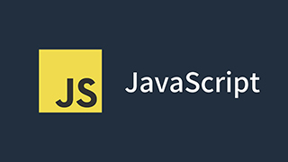
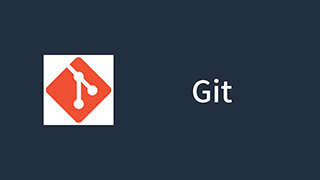
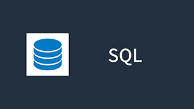

Розділ 1. Вступ
Сучасна програмна розробка охоплює безліч технологій, що працюють разом для створення веб-додатків.
У цій
статті ми розглянемо ключові з них, їх особливості та взаємодію між собою.
Розділ 2. Основні технології

JavaScript – фронтенд
JavaScript забезпечує динамічність веб-сторінок, працює в браузері та використовується для інтерактивних
елементів.
Це одна з найпоширеніших мов у розробці веб-застосунків.
- Маніпуляція DOM
- Додавання, зміна та видалення елементів сторінки
- Реагування на події користувача
- Робота з AJAX-запитами
- Отримання даних з сервера без перезавантаження сторінки
- Взаємодія з API
- Використання React
- Створення компонентів для повторного використання
- Віртуальний DOM для швидкого рендерингу
PHP – бекенд
PHP використовується для серверної частини веб-додатків. Це популярна мова для створення динамічних веб-сайтів.
- Робота з базами даних
- Виконання запитів до MySQL, PostgreSQL
- Захист від SQL-ін’єкцій
- Обробка форм
- Валідація введених користувачем даних
- Збереження інформації в базі
- CMS (WordPress)
- Гнучка система управління контентом
- Велика кількість плагінів і тем

Git – контроль версій
Git дозволяє відстежувати зміни та працювати над кодом у команді. Це стандартний інструмент для розробників.
- Відстеження змін
- Збереження кожної версії файлу
- Перегляд історії змін
- Спільна робота через GitHub
- Можливість спільного редагування коду
- Використання pull requests
- Відкат до попередніх версій
- Повернення до стабільних версій коду
- Виправлення помилок без втрати історії
Цікаво знати: Контроль версій за допомогою Git дозволяє команді працювати над кодом без конфліктів та зберігати історію змін.

SQL – бази даних
SQL використовується для збереження та обробки даних. Він є основним засобом роботи з реляційними базами.
- Запити SELECT, INSERT, UPDATE, DELETE
- Витягування потрібних даних
- Модифікація інформації
- Робота з MySQL, PostgreSQL
- Використання популярних систем керування базами даних
- Оптимізація запитів для швидкої роботи
Розділ 3. Взаємозв’язок технологій
- JavaScript + React– фронтенд для створення динамічного інтерфейсу користувача
- PHP + SQL – бекенд і бази даних для збереження та обробки інформації
- Git– контроль версій для збереження та організації командної роботи
Розділ 4. Висновок
Для веб-розробки важливо поєднувати JavaScript, PHP, SQL та Git. Кожна технологія виконує свою роль у створенні
сучасних веб-додатків.
Вміння комбінувати їх дозволяє розробникам створювати потужні, інтерактивні та
ефективні рішення.